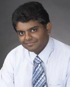

|  | Sanjay KrishnaGroup Lider Center for High Technology Materials, 1313 Goddard Street SE, Albuquerque, NM 87106 Phone: 505-272-7892 Fax: (505) 272-7801 Email: skrishna at chtm dot unm dot edu |
Even as we undertake to unravel the mysteries of the universe, we have to take a step back and see where we are going. My professional philosophy has always been governed by the dictum most aptly described by the author, Ursula Leguin who said "It is good to have an end to journey toward, but it is the journey that matters in the end." I firmly believe that in order to maintain a successful research program, one needs three basic ingredients: (a) novel ideas based on sound scientific understanding, (b) a motivated, bright and hardworking research team and (c) good collaborators with complementary research expertise. |